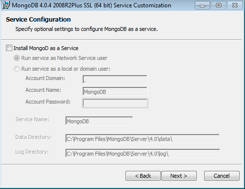

Deploy mongoDB¶
Select the operating system on which you are installing MongoDB:
Linux¶
This instruction is for Ubuntu only if your are other than Ubuntu, please follow the instruction from official website
Install MongoDB Community Edition¶
Follow these steps to install MongoDB Community Edition using the apt package manager.
1. Import the public key used by the package management system.¶
From a terminal, issue the following command to import the MongoDB public GPG Key from https://www.mongodb.org/static/pgp/server-4.2.asc:
wget -qO - https://www.mongodb.org/static/pgp/server-4.2.asc | sudo apt-key add -
The operation should respond with an OK.
However, if you receive an error indicating that gnupg is not installed, you can:
-
Install gnupg and its required libraries using the following command:
sudo apt-get install gnupg
-
Once installed, retry importing the key:
wget -qO - https://www.mongodb.org/static/pgp/server-4.2.asc | sudo apt-key add -
2. Create a list file for MongoDB.¶
Create the list file /etc/apt/sources.list.d/mongodb-org-4.2.list for your version of Ubuntu.
Choose the appropriate option for your version of Ubuntu. If you are unsure of what Ubuntu version the host is running, open a terminal or shell on the host and execute lsb_release -dc.
- Ubuntu 18.04 (Bionic)
Create the /etc/apt/sources.list.d/mongodb-org-4.2.list file for Ubuntu 18.04 (Bionic):
echo "deb [ arch=amd64,arm64 ] https://repo.mongodb.org/apt/ubuntu bionic/mongodb-org/4.2 multiverse" | sudo tee /etc/apt/sources.list.d/mongodb-org-4.2.list
- Create the /etc/apt/sources.list.d/mongodb-org-4.2.list file for Ubuntu 16.04 (Xenial):
echo "deb [ arch=amd64,arm64 ] https://repo.mongodb.org/apt/ubuntu xenial/mongodb-org/4.2 multiverse" | sudo tee /etc/apt/sources.list.d/mongodb-org-4.2.list
3. Reload local package database.¶
Issue the following command to reload the local package database:
sudo apt-get update
3. Install the MongoDB packages.¶
To install the latest stable version, issue the following:
sudo apt-get install -y mongodb-org
Optional. Although you can specify any available version of MongoDB, apt-get will upgrade the packages when a newer version becomes available. To prevent unintended upgrades, you can pin the package at the currently installed version:
echo "mongodb-org hold" | sudo dpkg --set-selections echo "mongodb-org-server hold" | sudo dpkg --set-selections echo "mongodb-org-shell hold" | sudo dpkg --set-selections echo "mongodb-org-mongos hold" | sudo dpkg --set-selections echo "mongodb-org-tools hold" | sudo dpkg --set-selections
Run MongoDB Community Edition¶
1. Start MongoDB.¶
You can start the mongod process by issuing the following command:
sudo systemctl start mongod
If you receive an error similar to the following when starting mongod:
Failed to start mongod.service: Unit mongod.service not found.
Run the following command first:
sudo systemctl daemon-reload
Then run the start command above again.
2. Verify that MongoDB has started successfully.¶
sudo systemctl status mongod
You can optionally ensure that MongoDB will start following a system reboot by issuing the following command:
sudo systemctl enable mongod
3. Stop MongoDB¶
As needed, you can stop the mongod process by issuing the following command:
sudo systemctl stop mongod
4. Restart MongoDB.¶
You can restart the mongod process by issuing the following command:
sudo systemctl restart mongod
You can follow the state of the process for errors or important messages by watching the output in the /var/log/mongodb/mongod.log file.
ref: https://docs.mongodb.com/manual/tutorial/install-mongodb-on-ubuntu/#create-a-list-file-for-mongodb
macOS¶
Install MongoDB Community Edition¶
Prerequisites¶
If you have the Homebrew brew package installed on your OSX host and you have previously tapped the official MongoDB Homebrew Tap, skip the prerequisites and go to the Procedure step.
Install XCode¶
Apple’s XCode includes command-line tools that are required by brew, and is available for free on the App Store. Make sure you are running the latest version.
Install Homebrew¶
OSX does not include the Homebrew brew package by default. Install brew using the official instructions.
Tap the MongoDB Homebrew Tap¶
Issue the following from the terminal to tap the official MongoDB Homebrew Tap:
brew tap mongodb/brew
Procedure¶
Follow these steps to install MongoDB Community Edition using the third-party brew package manager.
From a terminal, issue the following:
brew install mongodb-community@4.2
Run MongoDB Community Edition¶
Follow these steps to run MongoDB Community Edition. These instructions assume that you are using the default settings.
You can run MongoDB as a macOS service using brew, or you can run MongoDB manually as a background process. It is recommended to run MongoDB as a macOS service, as doing so sets the correct system ulimit values automatically (see ulimit settings for more information).
- To run MongoDB (i.e. the mongod process) as a macOS service, issue the following:
brew services start mongodb-community@4.2
- To run MongoDB manually as a background process, issue the following:
mongod --config /usr/local/etc/mongod.conf --fork
Both methods use the /usr/local/etc/mongod.conf file created during the install. You can add your own MongoDB configuration options to this file as well.
To verify that MongoDB is running, search for mongod in your running processes:
ps aux | grep -v grep | grep mongod
You can also view the log file to see the current status of your mongod process: /usr/local/var/log/mongodb/mongo.log.
Connect and Use MongoDB¶
To begin using MongoDB, connect a mongo shell to the running instance. From a new terminal, issue the following:
mongo
ref: https://docs.mongodb.com/manual/tutorial/install-mongodb-on-os-x/
Windows¶
Install MongoDB Community Edition¶
Prerequisites¶
Users on Windows versions previous to Windows 10 must install the following update before installing MongoDB:
Users on Windows 10, Server 2016 and Server 2019 do not need this update.
Procedure¶
Follow these steps to install MongoDB Community Edition using the MongoDB Installer wizard. The installation process installs both the MongoDB binaries as well as the default configuration file \
-
Download MongoDB Community Edition.
Download the installer (.msi) from the MongoDB Download Center:
-
The Download Center should display MongoDB Community Server download information. If not, select Server, then click the MongoDB Community Server tab.
-
In the Version dropdown, select the version that corresponds to the latest MongoDB Server 4.2.
-
In the OS dropdown, Windows 64-bit X64 should be selected.
-
In the Package drop down, MSI should be selected.
-
Click Download.
-
-
Run the MongoDB installer.
For example, from the Windows Explorer/File Explorer:
-
Go to the directory where you downloaded the MongoDB installer (.msi file). By default, this is your Downloads directory.
-
Double-click the .msi file.
-
-
Follow the MongoDB Community Edition installation wizard.
The wizard steps you through the installation of MongoDB and MongoDB Compass.
a. Choose Setup Type¶
You can choose either the Complete (recommended for most users) or Custom setup type. The Complete setup option installs MongoDB and the MongoDB tools to the default location. The Custom setup option allows you to specify which executables are installed and where.
b. Service Configuration¶
Starting in MongoDB 4.0, you can set up MongoDB as a Windows service during the install or just install the binaries.
MongoDB Service¶
The following installs and configures MongoDB as a Windows service.
Starting in MongoDB 4.0, you can configure and start MongoDB as a Windows service during the install, and the MongoDB service is started upon successful installation.

-
Select Install MongoD as a Service MongoDB as a service.
-
Select either:
-
Run the service as Network Service user (Default)
This is a Windows user account that is built-in to Windows
or
-
Run the service as a local or domain user
-
For an existing local user account, specify a period (i.e. .) for the Account Domain and specify the Account Name and the Account Password for the user.
-
For an existing domain user, specify the Account Domain, the Account Name and the Account Password for that user.
-
-
Service Name. Specify the service name. Default name is MongoDB. If you already have a service with the specified name, you must choose another name.
-
Data Directory. Specify the data directory, which corresponds to the
--dbpath. If the directory does not exist, the installer will create the directory and sets the directory access to the service user. -
Log Directory. Specify the Log directory, which corresponds to the
--logpath.If the directory does not exist, the installer will create the directory and sets the directory access to the service user.
MongoDB¶
The following installs MongoDB only and does not configure MongoDB as a Windows service.
If you choose not to configure MongoDB as a Windows service, uncheck the Install MongoD as a Service.

c. Install MongoDB Compass¶
For Windows 8 or greater, you can have the wizard install MongoDB Compass. To install Compass, select Install MongoDB Compass (Default).
d. When ready, click Install.¶
If You Installed MongoDB as a Windows Service¶
The MongoDB service is started upon successful installation
To begin using MongoDB, connect a mongo.exe shell to the running MongoDB instance. Either:
-
From Windows Explorer/File Explorer, go to C:\Program Files\MongoDB\Server\4.2\bin\ directory and double-click on mongo.exe.
-
Or, open a Command Interpreter with Administrative privileges and run:
C:\Program Files\MongoDB\Server\4.2\bin\mongo.exe
If You Did Not Install MongoDB as a Windows Service¶
If you only installed the executables and did not install MongoDB as a Windows service, you must manually start the MongoDB instance.
See Run MongoDB Community Edition from the Command Interpreter for instructions to start a MongoDB instance.
Run MongoDB Community Edition as a Windows Service¶
Starting in version 4.0, you can install and configure MongoDB as a Windows Service during the install, and the MongoDB service is started upon successful installation. MongoDB is configured using the configuration file \
Start MongoDB Community Edition as a Windows Service¶
To start/restart the MongoDB service, use the Services console:
- From the Services console, locate the MongoDB service.
- Right-click on the MongoDB service and click Start.
To begin using MongoDB, connect a mongo.exe shell to the running MongoDB instance. To connect, open a Command Interpreter with Administrative privileges and run:
C:\Program Files\MongoDB\Server\4.2\bin\mongo.exe
Stop MongoDB Community Edition as a Windows Service¶
To stop/pause the MongoDB service, use the Services console:
- From the Services console, locate the MongoDB service.
- Right-click on the MongoDB service and click Stop (or Pause).
Remove MongoDB Community Edition as a Windows Service¶
To remove the MongoDB service, first use the Services console to stop the service. Then open a Windows command prompt/interpreter (cmd.exe) as an Administrator, and run the following command:
sc.exe delete MongoDB
Run MongoDB Community Edition from the Command Interpreter¶
You can run MongoDB Community Edition from the Windows command prompt/interpreter (cmd.exe) instead of as a service.
Open a Windows command prompt/interpreter (cmd.exe){target=_blank} as an Administrator.
1. Create database directory.¶
Create the data directory where MongoDB stores data. MongoDB’s default data directory path is the absolute path \data\db on the drive from which you start MongoDB.
From the Command Interpreter, create the data directories:
cd C:\ md "\data\db"
2. Start your MongoDB database.¶
To start MongoDB, run mongod.exe.
"C:\Program Files\MongoDB\Server\4.2\bin\mongod.exe" --dbpath="c:\data\db"
The --dbpath option points to your database directory.
If the MongoDB database server is running correctly, the Command Interpreter displays:
[initandlisten] waiting for connections
3. Connect to MongoDB.¶
To connect a mongo.exe shell to the MongoDB instance, open another Command Interpreter with Administrative privileges and run:
"C:\Program Files\MongoDB\Server\4.2\bin\mongo.exe"
ref: https://docs.mongodb.com/manual/tutorial/install-mongodb-on-windows/